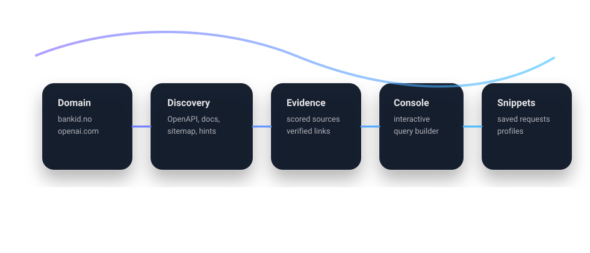

Domain-first
Type a domain. Restless hunts for entry points and organizes evidence, so you can move fast without guessing.
Restless finds entry points (OpenAPI, docs, sitemaps), generates working queries, and saves clean, reusable profiles and snippets over time. It speaks CLI, and it can draw its own UI in the terminal.
Most API tools assume you already have a spec, a token, a base URL, and a plan. Restless starts earlier: from a domain. It does the heavy lifting.
Type a domain. Restless hunts for entry points and organizes evidence, so you can move fast without guessing.
Save what works. Profiles remember base URLs, auth hints, and discovered endpoints. No brittle copy pasta.
Generate working request snippets (curl or native). Keep them tidy, searchable, and reusable.
First-class streaming support, so long-running tasks feel alive instead of frozen in time.
Automagic sanity checks. Fix what can be fixed, and print the rest with useful next steps.
Even in CLI-mode, Restless can draw a friendly UI and guide you like a co-pilot, not a lecture.
A simple mental model: evidence in, structure out, productivity up.

Discovery -> Evidence -> Console -> Snippets -> Profile" />Search for openapi.json, swagger, sitemaps, docs pages, and known conventions.
Turn findings into candidate endpoints, then generate ready-to-run requests.
discover --save-profile stores base settings so the next session starts where you left off.
An interactive console helps craft requests and stores them as searchable snippets.
Copy, paste, ship. This is the happy path.
restless discover openai.com --save-profile openaiFind entry points and store a reusable profile.
restless console --profile openaiGenerate queries, run, and save snippets without leaving the session.
restless snippets list --profile openai
restless snippets run --profile openai modelsOver time, your snippet shelf becomes a personal API cookbook.
restless request --profile openai GET /v1/models --streamNo dead silence, no frozen terminals, just live output.
Start with a source build today. Releases can attach binaries as the CI matures.
git clone https://github.com/bspippi1337/restless
cd restless
make build-all
./dist/restless --helppkg update -y
pkg install -y git golang make
git clone https://github.com/bspippi1337/restless
cd restless
make build-all
./dist/restless --helpRestless includes a fix-all script in scripts/fixall.sh for Termux/Debian environments.
Short, practical, and built for copy-paste.
Run restless --help for a command map, examples, and smart hints.
discover --save-profile stores your working setup so you can iterate fast.
Interactive generation that saves working snippets as a curated shelf.